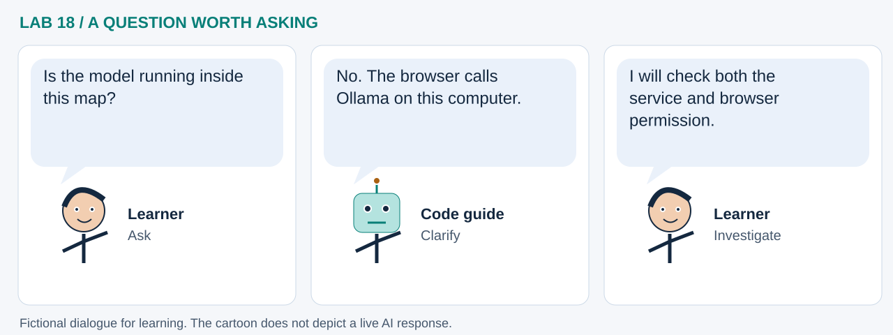

LAB 18 · 32-SECOND VISUAL WALKTHROUGH
Local AI, browser map
Where does the model run when GeoLibre chats?
Silent, captioned storyboard. Use the player to pause, seek or change playback speed. On a small screen, use fullscreen or read the transcript below. The diagrams explain the method; they are not recordings of a live model run.
Download MP4 · Captions · Open infographic at full size

What runs here?
Pyodide prepares a synthetic project. The full GeoLibre web app can call a separate desktop Ollama service after explicit setup.
Local-model setup and native GeoLibre practice; no model is trained in this notebook.
Transcript and code landmarks
- 00–08s · Inspect
Check twelve invented polygons before asking an assistant about them.
len(cells['features']) - 08–16s · Connect
Opt into a local-service check after configuring exact origins.
LIVE_CONNECT = True - 16–24s · Open
Move a reviewed map recipe into the full GeoLibre web app.
native_project.to_project() - 24–32s · Verify
Check seven selected cells against the native assistant's transcript.
heat_proxy_c >= 39
The common misconception

Read the cartoon dialogue
- Is the model running inside this map?
- No. The browser calls Ollama on this computer.
- I will check both the service and browser permission.
Try explaining it
Does local inference mean every map request stays offline?
Check your reasoning
No. Basemaps, remote layers and the hosted viewer still use the network. Optional hosted AI services must also be considered.
Original educational illustrations and captions authored for this repository. See the notebook for data and software citations.